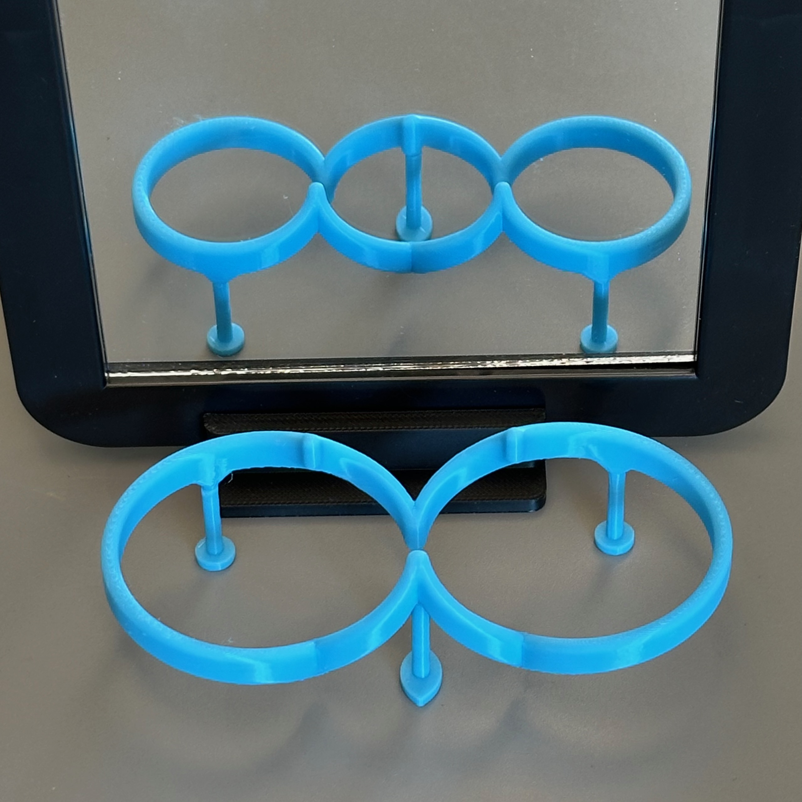
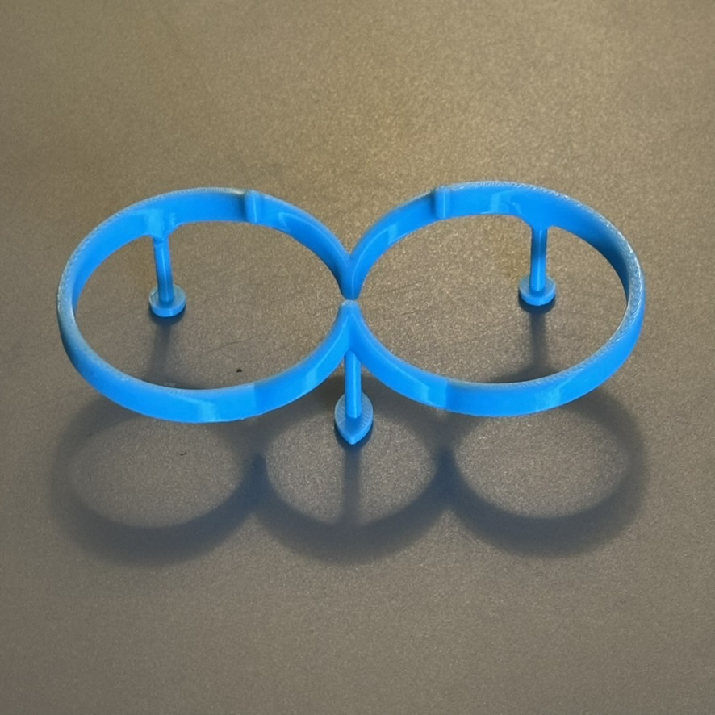
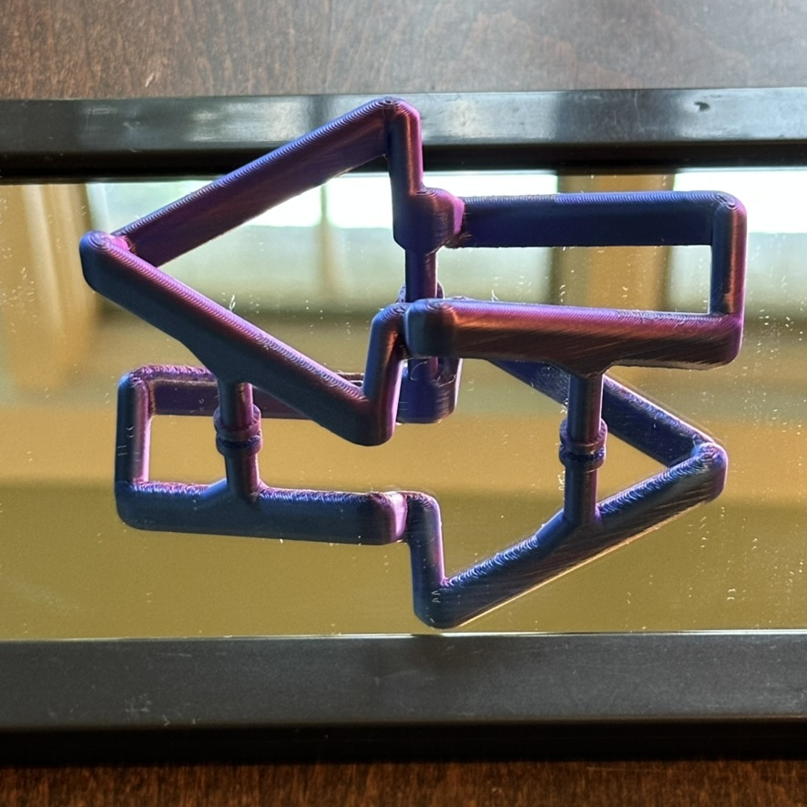

1Design your impossible object
Open the designer and choose front and a back shapes from the
dropdown menus.
To use your own shape, upload an .svg file. Your curve
must have the following properties.
- It must be a single closed curve, like the sample shapes.
- Every vertical line must cross the curve at exactly one or two points—no indentations from the sides. In mathematical terms, the curve must be bounded above and below by the graphs of two functions
of x. Any indentations that violate this will be ignored.
- Size doesn't matter. The shapes are scaled automatically to match.
Use any vector drawing program or a graphing tool like GeoGebra
if you'd rather define the curve mathematically. Export the file as an .svg.
2Export to OpenSCAD
Click Export the File to download a self-contained .scad file. The pop-up window opens prepopulated with your chosen dimensions. They can be modified here or later in OpenSCAD.
The optional legs let the model stand upright at the proper viewing angle. Also, two of the
feet are round and one is a fish eye; the fish-eye foot should point directly toward or away from the
viewer.
3Render and export an STL
If you don't have OpenSCAD, download the free, open-source program from
openscad.org/downloads.html.
- Open the
.scad file in OpenSCAD.
- Design → Preview to preview the model.
- Fine tune the parameters in the editor window or via the Customizer panel (Window → Customizer).
- Design → Render for a full-resolution render.
- File → Export → Export as STL to save the
.stl file.
4Print it
Send the .stl to your slicer, and print as usual.
Printing advice
- These shapes touch the build plate at only a few small points and most of the shape is unsupported, so adding temporary printing support is essential.
- A brim helps keep the object anchored to the plate.
- Slowing the print speed can improve adhesion and reduce the chance of failure.
5Viewing the object
Place the object on a flat surface with the fish eye leg pointing toward you or away from you.
The effect assumes that the viewer is "at infinity." From a practical standpoint, this means that the viewer should not be too close to the object. Also, this means that smaller versions of the object may work better than larger ones.
Ways to view the illusion:
- Look down on the object from 45° to see the effect. Turn it around to see the effect from the other side.
- Prop a mirror behind it—the reflection shows the back-side view. Tip the mirror a few degrees toward
you (about 87° rather than a full 90°) for the best effect.
- Shine a light down on it from behind at 45° to cast the "opposite shadow"—a shadow in the shape of the back-view silhouette.
- Place a mirror flat on a surface. Set the object on the mirror. View from a 45° angle.


